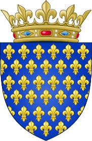

Kung av Frankerna. Blev högst 59 år.
972 Orleáns, France. [1]
1031-07-20 Melun, France. [1]
ROBERT II. ( c.970-1031), kung av Frankrike, var en son till Hugh Capet, och föddes i Orleans. Han utbildades i Reims under Gerbert, därefter påven Silvester II. Som ideal för medeltida kristendom vann han sitt efternamn "From" genom sin ödmjukhet och välgörenhet, men han hade också några av egenskaperna hos en soldat och en statsman. Hans far associerade honom med sig själv i Frankrikes regering, och han kröntes i december 987 och blev ensam kung vid Hughs död i oktober 996. Roberts regeringstid är främst ihågkommen för sin dramatiska sida. År 988 hade han gift sig med Rosala, eller Susanna, änka efter Arnold II., greve av Flandern. Denna dam var emellertid mycket äldre än Robert, som förkastade henne 989, och fäste sina tillgivenheter på Bertha, dotter till Conrad den fredlige, kung av Bourgogne eller Arles, och hustru till Eudes I., greve av Blois; och även om paret var släkt och kungen hade varit gudfader till ett av Berthas barn, gifte de sig 996, ett år efter Eudes död. Påven Gregorius V., vars gunst Robert förgäves sökte vinna genom att låta Arnulf, den fängslade ärkebiskopen, återvända till sin säte i Reims och tvinga Gerbert att fly till kejsar Otto III:s hov, exkommunicerade kungen och ett råd kl. Rom ålade honom sju års bot. I fem år trotsade kungen alla anathemas, men omkring 1002 gav han upp Bertha och gifte sig med Constance, dotter till en viss greve William, en spännande och ambitiös kvinna, som gjorde livet surt för sin man, medan hovet stördes av bråk mellan de partisaner till de två drottningarna. Fortfarande knuten till Bertha tog Robert denna dam med sig till Rom 1010, men påven vägrade att erkänna deras äktenskap, och kungen tvingades återvända till Konstanz. Av denna hustru fick Robert fyra söner, och 1017 kröntes den äldste av dessa, Hugh, (1007-1025), som sin fars kollega och efterträdare. Efter Hughs död anskaffade kungen kröningen av sin andre son, Henrik, hertig av Bourgogne, därefter kung av Frankrike, ett förfarande som. missnöjde Constance, som önskade att hennes tredje son, Robert (d. 1075), därefter hertig av Bourgogne, skulle få kronan. Roberts avslutande dagar besvärades av en resning från dessa båda söners sida, och efter ett kort krig, i vilket han blev värst, dog kungen på Melun den 20 juli 1031. Den anmärkningsvärda vinsten för Frankrike under denna regeringstid var hertigdömet Bourgogne, som Robert gjorde anspråk på vid sin farbror, hertig Henriks, död i Io01. Den andra käranden, men Otto William, greve av övre Bourgogne, eller Franche Comte, gjorde ett så envist motstånd att det var först 1015 som kungen säkrade hertigdömet, som han gav som apanage till sin son Henrik. Trots det hade Robert själv en noggrann uppsikt över dess regering, och detta var en anledning som ledde till hans söners uppror 1030. På grund av familjebråk kunde han inte hindra kungariket Bourgogne, eller Arles, från att övergå i händerna av kejsaren Conrad II., och inga allvarliga resultat följde hans inblandning i Flandern eller i Lorraine. Robert lade till de kungliga domänerna och fick mycket hjälp av Richard II:s stöd. och Richard III., hertigar av Normandie, av vilka den sistnämnde var hans svärson. bjöd så envist motstånd att det dröjde förrän 1015 innan kungen säkrade hertigdömet, som han gav som apanage till sin son Henrik. Trots det hade Robert själv en noggrann uppsikt över dess regering, och detta var en anledning som ledde till hans söners uppror 1030. På grund av familjebråk kunde han inte hindra kungariket Bourgogne, eller Arles, från att övergå i händerna av kejsaren Conrad II., och inga allvarliga resultat följde hans inblandning i Flandern eller i Lorraine. Robert lade till de kungliga domänerna och fick mycket hjälp av Richard II:s stöd. och Richard III., hertigar av Normandie, av vilka den sistnämnde var hans svärson. På grund av familjebråk kunde han inte hindra kungariket Bourgogne, eller Arles, från att övergå i händerna på kejsaren Conrad II., och inga allvarliga resultat följde hans inblandning i Flandern eller i Lorraine. Robert lade till de kungliga domänerna och fick mycket hjälp av Richard II:s stöd. och Richard III., hertigar av Normandie, av vilka den sistnämnde var hans svärson. På grund av familjebråk kunde han inte hindra kungariket Bourgogne, eller Arles, från att övergå i händerna på kejsaren Conrad II., och inga allvarliga resultat följde hans inblandning i Flandern eller i Lorraine. Robert lade till de kungliga domänerna och fick mycket hjälp av Richard II:s stöd. och Richard III., hertigar av Normandie, av vilka den sistnämnde var hans svärson.
Hans liv skrevs av hans kaplan, Helgaud, och denna panegyrik, Epitoma vitae Roberti regis, publiceras av JP Migne i Patrologia Latina, tome cxli. (Paris, 1844). Se även C. Pfister, Etudes sur le regne de Robert le Pieux (Paris, 1885); och E. Lavisse, Histoire de France, tome ii. (Paris, 1901).